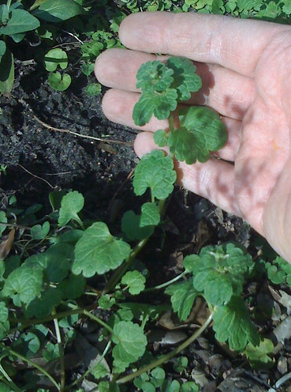
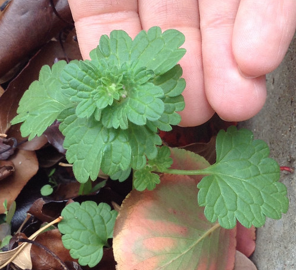
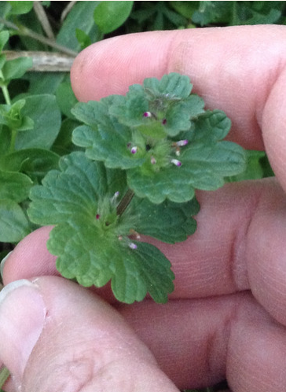
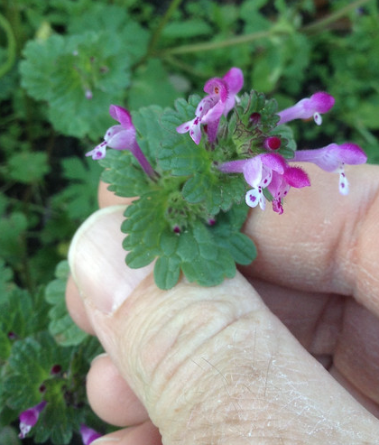

Henbit
Scientific Name(s):
Lamium amplexicaule
Abundance:
common
What:
leaves, stem, and flowers
How:
raw, cooked, or tea
Where:
sunny yards, urban areas
When:
late fall, winter (in Houston), spring
Nutritional Value:
vitamins, iron, antioxidants
Medicinal Summary: antioxidant, antiviral, antimicrobial, anti-inflammatory, and anticancer/cytoprotective. Study: Lamium Plants—A Comprehensive Review on Health Benefits and Biological Activities
Henbit
{kind=link}
{kind=link}
Single Henbit plant.

Close-up of top portion of Henbit before flowers appear.

Close-up of top of Henbit when flowers are just beginning to appear.

Close-up of Henbit flowers. They're really odd-looking.

Closer close-up of Henbit flowers.

Texas distribution, attributed to U. S. Department of Agriculture. The marked counties are guidelines only. Plants may appear in other counties, especially if used in landscaping.
{kind=link}
North American distribution, attributed to U. S. Department of Agriculture.
{kind=link}
Clumps of henbit begin showing up yards in mid-winter. Rarely standing over 10" tall, it's spindly form, odd-shaped leaves, and small, purple tubular flowers make it very noticeable against the brown, dead winter grass. Looking closely will reveal the oppositely-placed leaves and square, hollow stem of the mint family. It likes yards and other open, sunny areas where it can grow dense mats.
The whole plant is edible either raw or cooked though the stems can become stringy as the plant matures. It has a mild bitter/spinachy flavor. Chickens love this stuff so if you have backyard chickens start collecting Henbit from your neighbor's yard (after asking permission, of course). They'll love your chickens even more if you weed their yards.